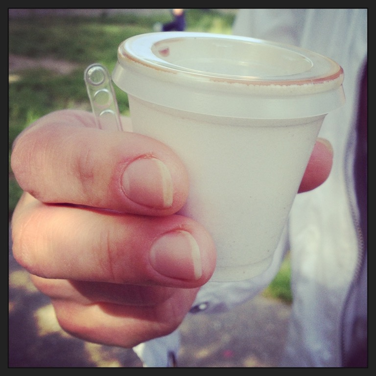

Photo by Francesca Tosolini
Italians don’t bring their coffee wherever they go and the big insulated travel mugs, that are so popular in the States, are definitely not a part of the Italian culture. However, sometimes you may see some people ordering their coffee at the bar and then taking it away. When that happens, it comes in this size. {This is an excerpt from chapter 4 “Gelaterie and coffee houses” of the eBook “Italy from the Inside. A native Italian reveals the secrets of traveling in Italy”}